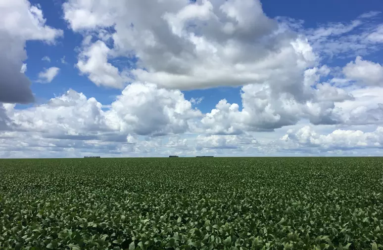

Plantar árvores é uma excelente maneira de ajudar a preservar o meio ambiente e deixar um legado positivo para as futuras gerações. Mas, para que o plantio seja bem-sucedido, é importante escolher a época certa para fazê-lo. No Nordeste brasileiro, a escolha da época de plantio é ainda mais crucial, já que a região tem características climáticas diferentes de outras partes do país. Então, vamos entender quais são as melhores épocas do ano para plantar no Nordeste e garantir que suas mudas cresçam fortes e saudáveis. Antes de tudo, é importante destacar que as melhores épocas para plantar no Nordeste variam de acordo com a região e o tipo de planta que será cultivada. Porém, de modo geral, o período mais indicado para o plantio de árvores no Nordeste é o período chuvoso, que ocorre entre os meses de janeiro a maio. Nesse período, as chuvas são mais frequentes, o que favorece o desenvolvimento das raízes e das folhas.
Além disso, é importante observar a temperatura e a umidade do ar. O clima do Nordeste pode ser bastante seco, o que pode prejudicar o crescimento das mudas. Por isso, é recomendado plantar durante os períodos mais frescos do ano, como durante o outono e o inverno, quando as temperaturas estão mais amenas e o ar é mais úmido. Por outro lado, o período de estiagem, que vai de junho a dezembro, é menos favorável para o plantio, já que as chuvas são mais escassas e o clima é mais seco. Mas, se for necessário plantar nesse período, é importante ficar atento à irrigação, para garantir que as mudas recebam água suficiente para sobreviver.
O Nordeste é conhecido pela produção de frutas tropicais, como manga, caju, abacaxi, banana e melão, que encontram na região um clima ideal para o seu desenvolvimento. Além disso, o cultivo de grãos como feijão, milho e arroz também é bastante expressivo na região, principalmente em áreas mais irrigadas. Outro produto agrícola de destaque no Nordeste é a cana-de-açúcar, que é cultivada principalmente nos estados de Pernambuco, Paraíba e Alagoas. A cana é utilizada na produção de açúcar e etanol, importantes produtos para a economia brasileira. E também, o Nordeste é um importante produtor de algodão, principalmente nos estados da Bahia, Ceará e Paraíba. O algodão é utilizado na indústria têxtil e tem grande importância na economia da região. Assim como, o Nordeste também é conhecido pela produção de castanha de caju, um produto bastante valorizado no mercado internacional, e pela produção de cacau, utilizado na fabricação de chocolates e outros produtos alimentícios.